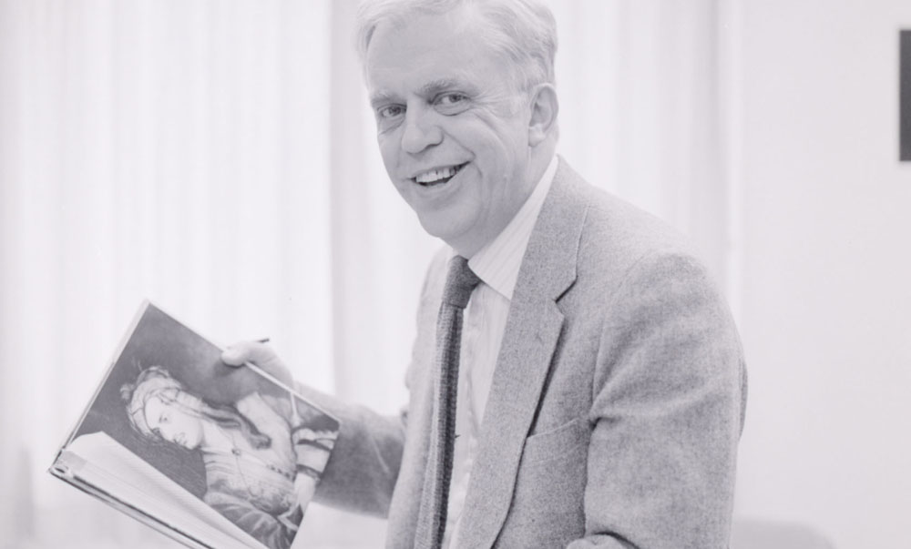

In 1970, an English professor at University of Nebraska–Lincoln, Dr. Louis Crompton, organized a course entitled "Proseminar in Homophile Studies." The interdisciplinary course was one of the earliest courses on queer sexuality taught in the United States. Louis Crompton: The Selected Homofiles presents a series of Crompton's papers, which contextualize both the course and the political fallout it caused—political fallout that bears striking similarities to 21st-century politicians' attempts to control academic curricula.